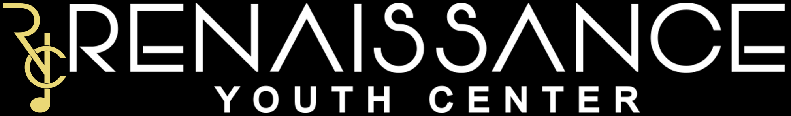
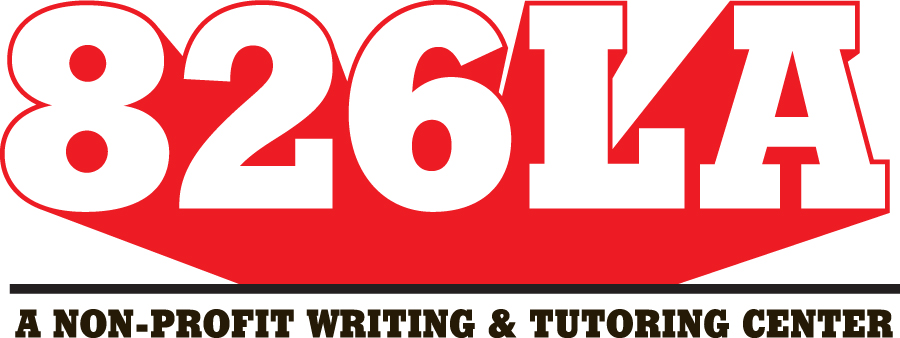
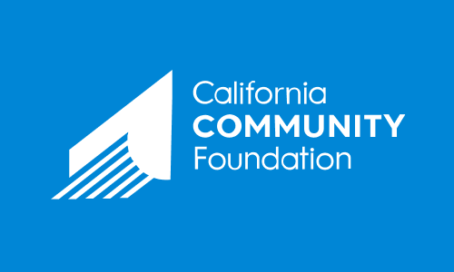

Charities of the Month

The Renaissance Youth Center, based in Bronx, New York, has created a safe haven for the community's youth to develop life-long academic and social skills. They offer music classes, afterschool programming, tutoring, and civic engagement whie instilling the importance of self and community growth.

826LA is a Los Angeles-based nonprofit dedicated to supporting students aged 6-18 with their creative and expository writing skills and helping teachers inspire their students to write with programs structured around one-on-one attention.

The California Community Foundation leads positive systemic change that strengthens Los Angeles' communities. Currently, they primarily support recovery efforts following the Palisades wildfires that have ravaged the region.

The National Women's Law Center, founded in 1972 in Washington, D.C., advocates for women's rights and LGBTQ rights through litigation, policy, and culture change initiatives.